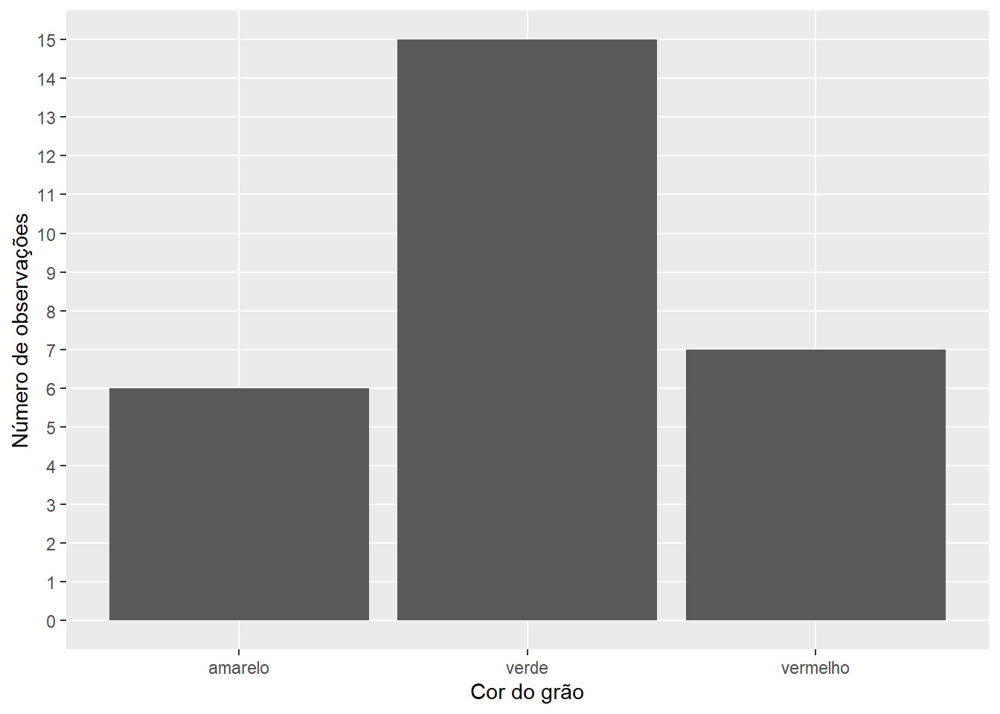
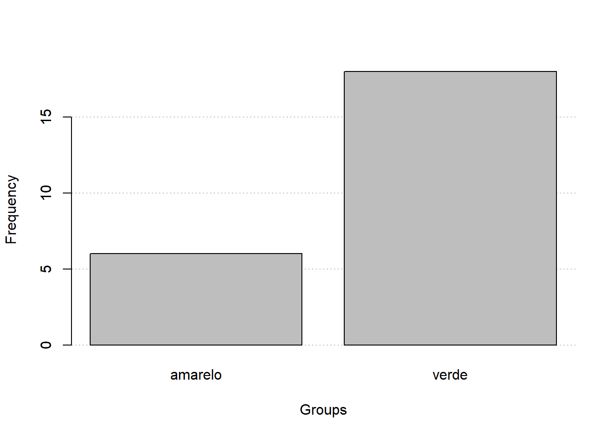
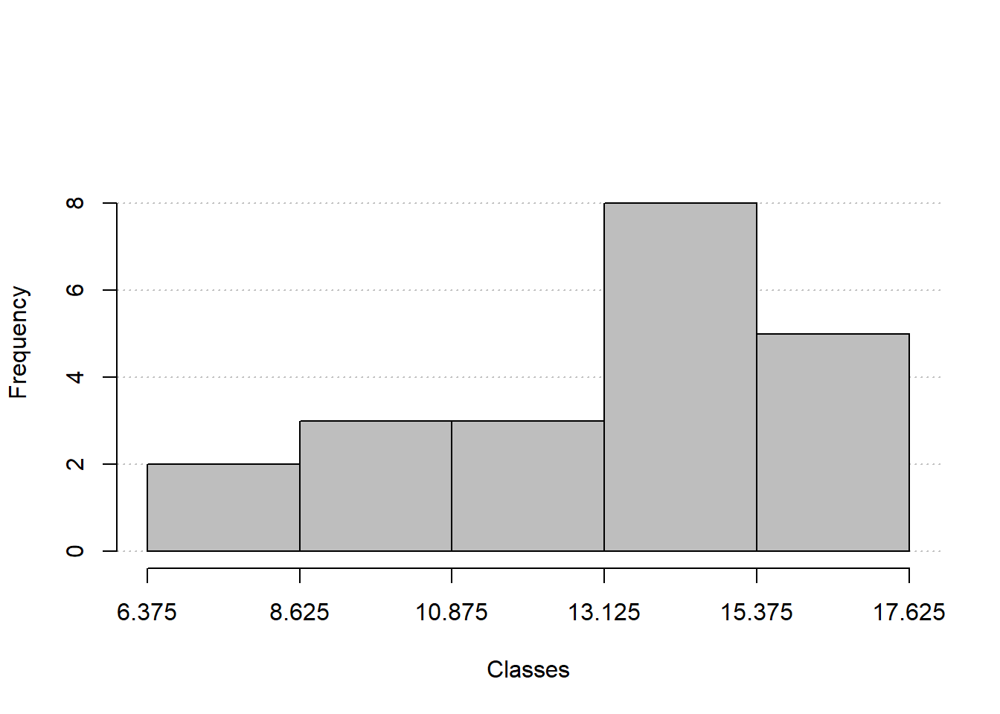
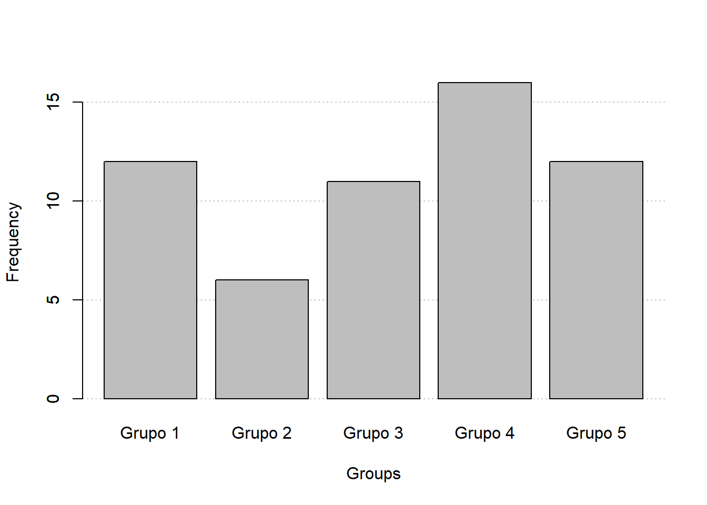

Uma forma de lidar com grandes conjuntos de dados e identificar informações relevantes é agrupar estes dados. O agrupamento é feito em tabelas, denominadas de distribuições de frequências. A construção de distribuição de frequências é geralmente realizada de forma distinta para variáveis discretas (distribuição por pontos) e contínuas (distribuição por classes ou intervalos).
Neste exemplo, vamos utilizar os dados coletados do comprimento, diâmetro e cor de grão de café.
library(tidyverse)library(rio)library(metan)# importar os dados do google sheetdf <-import("https://docs.google.com/spreadsheets/d/1JMrkppvv1BdGKVCekzZPsPYCKcgUWjxpuDlWqejc22s/edit#gid=353032103",dec =",")# mostrar os dadosknitr::kable(df)
amostra
comp_grao
diam_grao
cor_grao
1
15.89
11.66
vermelho
2
14.68
11.37
vermelho
3
13.60
11.39
vermelho
4
11.39
11.58
vermelho
5
14.27
10.69
vermelho
6
15.02
11.28
vermelho
7
11.88
8.54
vermelho
8
15.06
10.99
amarelo
9
15.98
11.42
amarelo
10
13.32
9.38
amarelo
11
14.64
11.04
amarelo
12
12.15
9.30
amarelo
13
15.59
11.99
amarelo
14
14.26
10.47
verde
15
12.04
8.70
verde
16
10.95
8.43
verde
17
12.88
9.36
verde
18
11.86
9.10
verde
19
14.02
9.17
verde
20
11.99
10.20
verde
21
12.77
9.88
verde
22
12.47
8.53
verde
23
9.75
6.63
verde
24
9.09
7.29
verde
25
10.47
8.54
verde
26
10.14
8.32
verde
27
11.48
8.43
verde
28
12.66
9.25
verde
Variáveis qualitativas e quantitativas discretas
Para exemplificar a construção de tabelas de frequências de variáveis qualitativas / quantitativas discretas, utilizaremos a variável cor do grão. Neste caso, três classes (classes naturais) estão presentes: vermelho, amarelo e verde. Assim, a construção da tabela de frequência diz respeito a contagem de observações em cada uma destas classes e o cálculo das frequências relativas e absolutas.
Representação tabular
Pode-se criar facilmente esta tabela de frequência combinando as funções count() e mutate() do pacote dplyr (parte do tidyverse).
Para apresentar estes dados graficamente, pode-se construir um gráfico de barras, mostrando a contagem em cada classe.
ggplot(df, aes(cor_grao)) +geom_histogram(stat="count") +scale_y_continuous(breaks =0:15) +labs(x ="Cor do grão",y ="Número de observações") +theme(panel.grid.minor =element_blank())
Warning: Ignoring unknown parameters: binwidth, bins, pad

Variáveis quantitativas
Para o caso de variáveis quantitativas contínuas (ex. X), precisamos agrupar os valores observados em intervalos de classe. Por exemplo, quando medimos uma altura de uma planta (ex. 1,86 m), a altura real não está limitado a segunda casa decimal. Então, a melhor forma será criar regiões (intervalos), de modo que possamos contemplar um conjunto de valores.
\[
\sqrt{250 \times \frac{2}{3}}
\]
Um critério empírico, para definição do número de classes (\(k\)) a ser criado se baseia no número de elementos (\(n\)) na amostra. Caso (\(n\)) seja igual ou inferior a 100, calcula-se o número de classes com \(k = \sqrt{n}\). Caso (\(n\)) seja maior que 100, calcula-se o número de classes com \(k = 5 \log\_{10}(n)\).
Após a determinação do número de classes, é necessário determinar a amplitude total (\(A\)), dada por:
\[
A = \max(X) - \min(X)
\]
Posteriormente, determina-se a amplitude da classe (\(c\)), dada por:
\[
c = \frac{A}{k - 1}
\]
Por fim, calcula-se o o limite inferior (\(LI_1\)) e superior (\(LS_1\)) da primeira classe, dados por
\[
LI_1 = min(X) - c/2\\\\
\]
\[
LS_1 = LI_1 + c
\]
O valor do limite superior não pertence a classe e será contabilizado para a próxima classe. Dizemos, então, que o conjunto é fechado a esquerda e aberto à direita. O limite inferior da segunda classe é dado pelo limite superior da primeira class (\(LI_2 = LS_1\)); o limite superior da segunda classe é dado por (\(LS_2 = LI_2 + c\)). Esta lógica segue até completar-se o número de classes do conjunto.
A função freq_table() está disponível no pacote metan e é mostrada explicitamente aqui. Ela automatiza o processo de construção de tabelas de frequências, tanto para variáveis qualitativas como quantitativas. Basta informar o conjunto de dados, a variável, e, opcionalmente, o número de classes a ser criado.
df_cor_grao <-import("https://docs.google.com/spreadsheets/d/1JMrkppvv1BdGKVCekzZPsPYCKcgUWjxpuDlWqejc22s/edit#gid=353032103",dec =",")freq_cafe <-freq_table(df_cor_grao, var = cor_grao)knitr::kable(freq_cafe$freqs)
cor_grao
abs_freq
abs_freq_ac
rel_freq
rel_freq_ac
amarelo
6
6
0.214
0.214
verde
15
21
0.536
0.750
vermelho
7
28
0.250
1.000
Total
28
28
1.000
1.000
# criar um histogramafreq_hist(freq_cafe)

Altura da turma
df_altura <-import("https://docs.google.com/spreadsheets/d/1JMrkppvv1BdGKVCekzZPsPYCKcgUWjxpuDlWqejc22s/edit#gid=1992833755") |>as_numeric(Altura)# Tabeladist_altura <-freq_table(df_altura, var = Altura)knitr::kable(dist_altura$freqs)
class
abs_freq
abs_freq_ac
rel_freq
rel_freq_ac
154.333 |— 163.666
3
3
0.15
0.15
163.666 |— 172.999
7
10
0.35
0.50
172.999 |— 182.332
8
18
0.40
0.90
182.332 |—| 191.665
2
20
0.10
1.00
Total
20
20
1.00
1.00
# Gráficofreq_hist(dist_altura)

Exercício
Considerando os dados dos 5 grupos (classes), disponível na planilha ‘união’ (https://docs.google.com/spreadsheets/d/1JMrkppvv1BdGKVCekzZPsPYCKcgUWjxpuDlWqejc22s/edit#gid=1453191616), construa e interprete a tabela de frequências, referente ao número de folhas avaliadas em cada grupo (quantitativa discreta).
df_uniao <-import("https://docs.google.com/spreadsheets/d/1JMrkppvv1BdGKVCekzZPsPYCKcgUWjxpuDlWqejc22s/edit#gid=1453191616",dec =",")# filtrar somente folhasdf_folha <-subset(df_uniao, tipo =="Folha")dist_numfolha <-freq_table(df_folha, var = grupo)knitr::kable(dist_numfolha$freqs)
grupo
abs_freq
abs_freq_ac
rel_freq
rel_freq_ac
Grupo 1
12
12
0.211
0.211
Grupo 2
6
18
0.105
0.316
Grupo 3
11
29
0.193
0.509
Grupo 4
16
45
0.281
0.789
Grupo 5
12
57
0.211
1.000
Total
57
57
1.000
1.000
# Gráficofreq_hist(dist_numfolha)

Considerando as observações de todos os grupos para a variável quantitativa contínua largura da folha, calcule:
O tamanho da amostra (n): 57
(n <-nrow(df_folha))
[1] 57
O número de classes (k):
(k <-round(sqrt(n)))
[1] 8
A amplitude dos dados:
(ampl <-range_data(df_folha, largura))
largura
1 5.9
O tamanho da classe
ampl / (k -1)
largura
1 0.8428571
A tabela de distribuição de frequências contendo as frequências relativas e absolutas de cada classe.
---
title: "2. Distribuição de frequências"
---
Uma forma de lidar com grandes conjuntos de dados e identificar informações relevantes é agrupar estes dados. O agrupamento é feito em tabelas, denominadas de distribuições de frequências. A construção de distribuição de frequências é geralmente realizada de forma distinta para variáveis discretas (distribuição por pontos) e contínuas (distribuição por classes ou intervalos).
Neste exemplo, vamos utilizar os dados coletados do comprimento, diâmetro e cor de grão de café.
```{r warning=FALSE, message=FALSE}
library(tidyverse)
library(rio)
library(metan)
# importar os dados do google sheet
df <- import("https://docs.google.com/spreadsheets/d/1JMrkppvv1BdGKVCekzZPsPYCKcgUWjxpuDlWqejc22s/edit#gid=353032103",
dec = ",")
# mostrar os dados
knitr::kable(df)
```
# Variáveis qualitativas e quantitativas discretas
Para exemplificar a construção de tabelas de frequências de variáveis qualitativas / quantitativas discretas, utilizaremos a variável cor do grão. Neste caso, três classes (classes naturais) estão presentes: vermelho, amarelo e verde. Assim, a construção da tabela de frequência diz respeito a contagem de observações em cada uma destas classes e o cálculo das frequências relativas e absolutas.
## Representação tabular
Pode-se criar facilmente esta tabela de frequência combinando as funções `count()` e `mutate()` do pacote `dplyr` (parte do `tidyverse`).
quarto-executable-code-5450563D
```r
tab_feq <-
df %>%
count(cor_grao) |>
mutate(abs_freq = n,
abs_freq_ac = cumsum(abs_freq),
rel_freq = abs_freq / sum(abs_freq),
rel_freq_ac = cumsum(rel_freq))
knitr::kable(tab_feq)
```
## Representação gráfica
Para apresentar estes dados graficamente, pode-se construir um gráfico de barras, mostrando a contagem em cada classe.
#
quarto-executable-code-5450563D
```r
ggplot(df, aes(cor_grao)) +
geom_histogram(stat="count") +
scale_y_continuous(breaks = 0:15) +
labs(x = "Cor do grão",
y = "Número de observações") +
theme(panel.grid.minor = element_blank())
```
# Variáveis quantitativas
Para o caso de variáveis quantitativas contínuas (ex. `X`), precisamos agrupar os valores observados em intervalos de classe. Por exemplo, quando medimos uma altura de uma planta (ex. 1,86 m), a altura real não está limitado a segunda casa decimal. Então, a melhor forma será criar regiões (intervalos), de modo que possamos contemplar um conjunto de valores.
$$
\sqrt{250 \times \frac{2}{3}}
$$
Um critério empírico, para definição do número de classes ($k$) a ser criado se baseia no número de elementos ($n$) na amostra. Caso ($n$) seja igual ou inferior a 100, calcula-se o número de classes com $k = \sqrt{n}$. Caso ($n$) seja maior que 100, calcula-se o número de classes com $k = 5 \log\_{10}(n)$.
Após a determinação do número de classes, é necessário determinar a amplitude total ($A$), dada por:
$$
A = \max(X) - \min(X)
$$
Posteriormente, determina-se a amplitude da classe ($c$), dada por:
$$
c = \frac{A}{k - 1}
$$
Por fim, calcula-se o o limite inferior ($LI_1$) e superior ($LS_1$) da primeira classe, dados por
$$
LI_1 = min(X) - c/2\\\\
$$
$$
LS_1 = LI_1 + c
$$
O valor do limite superior não pertence a classe e será contabilizado para a próxima classe. Dizemos, então, que o conjunto é fechado a esquerda e aberto à direita. O limite inferior da segunda classe é dado pelo limite superior da primeira class ($LI_2 = LS_1$); o limite superior da segunda classe é dado por ($LS_2 = LI_2 + c$). Esta lógica segue até completar-se o número de classes do conjunto.
A função `freq_table()` está disponível no pacote metan e é mostrada explicitamente aqui. Ela automatiza o processo de construção de tabelas de frequências, tanto para variáveis qualitativas como quantitativas. Basta informar o conjunto de dados, a variável, e, opcionalmente, o número de classes a ser criado.
## Apresentação tabular
quarto-executable-code-5450563D
```r
frequencias <- freq_table(df, comp_grao)
knitr::kable(frequencias$freqs)
```
## Apresentação gráfica
quarto-executable-code-5450563D
```r
freq_hist(frequencias)
```
# Exemplos discutidos em aula
## Cor do grão do café (grupo 3)
quarto-executable-code-5450563D
```r
df_cor_grao <- import("https://docs.google.com/spreadsheets/d/1JMrkppvv1BdGKVCekzZPsPYCKcgUWjxpuDlWqejc22s/edit#gid=353032103",
dec = ",")
freq_cafe <- freq_table(df_cor_grao, var = cor_grao)
knitr::kable(freq_cafe$freqs)
# criar um histograma
freq_hist(freq_cafe)
```
## Altura da turma
quarto-executable-code-5450563D
```r
df_altura <- import("https://docs.google.com/spreadsheets/d/1JMrkppvv1BdGKVCekzZPsPYCKcgUWjxpuDlWqejc22s/edit#gid=1992833755") |>
as_numeric(Altura)
# Tabela
dist_altura <- freq_table(df_altura, var = Altura)
knitr::kable(dist_altura$freqs)
# Gráfico
freq_hist(dist_altura)
```
# Exercício
1. Considerando os dados dos 5 grupos (classes), disponível na planilha 'união' (https://docs.google.com/spreadsheets/d/1JMrkppvv1BdGKVCekzZPsPYCKcgUWjxpuDlWqejc22s/edit#gid=1453191616), construa e interprete a tabela de frequências, referente ao número de folhas avaliadas em cada grupo (quantitativa discreta).
quarto-executable-code-5450563D
```r
df_uniao <-
import("https://docs.google.com/spreadsheets/d/1JMrkppvv1BdGKVCekzZPsPYCKcgUWjxpuDlWqejc22s/edit#gid=1453191616",
dec = ",")
# filtrar somente folhas
df_folha <- subset(df_uniao, tipo == "Folha")
dist_numfolha <- freq_table(df_folha, var = grupo)
knitr::kable(dist_numfolha$freqs)
# Gráfico
freq_hist(dist_numfolha)
```
2. Considerando as observações de todos os grupos para a variável quantitativa contínua largura da folha, calcule:
a. O tamanho da amostra (n): 57
```{r}
(n <- nrow(df_folha))
```
b. O número de classes (k):
```{r}
(k <- round(sqrt(n)))
```
c. A amplitude dos dados:
```{r}
(ampl <- range_data(df_folha, largura))
```
d. O tamanho da classe
```{r}
ampl / (k - 1)
```
e. A tabela de distribuição de frequências contendo as frequências relativas e absolutas de cada classe.
quarto-executable-code-5450563D
```r
dist_largf <-
freq_table(df_folha,
var = largura)
knitr::kable(dist_largf$freqs)
# Gráfico
freq_hist(dist_largf)
```
# Tutorial R
```{=html}
<div class="video-container">
<iframe src="https://www.youtube.com/embed/SmaFbcB-OAI" title="YouTube video player" frameborder="0" allow="accelerometer; autoplay; clipboard-write; encrypted-media; gyroscope; picture-in-picture" allowfullscreen></iframe>
</div>
```